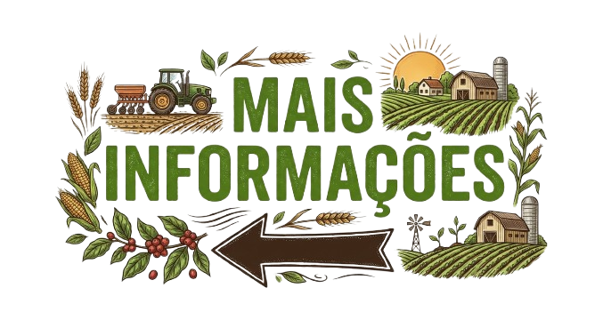
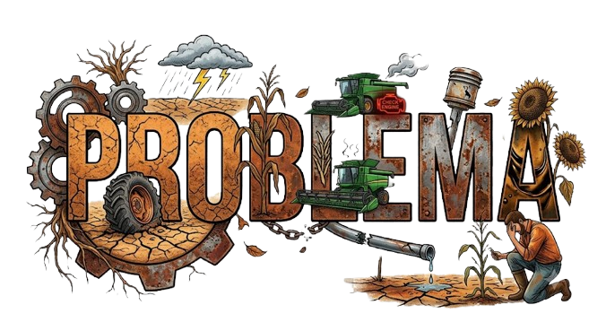
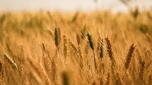

AGRINHO



O agronegócio brasileiro se consolidou como uma das maiores potências do planeta. Para entender a real força do setor hoje, vale a pena olhar para os números práticos, o peso que ele tem na nossa economia e quem são as estrelas da produção nacional. Os Grandes Números do Agro O setor movimentou cerca de R$ 3,20 trilhões, o que representa uma participação de 25,13% no PIB total do Brasil. Ele funciona como uma espécie de "ancoragem" para a economia: quando outros setores oscilam, a produção no campo costuma segurar o saldo positivo do país.